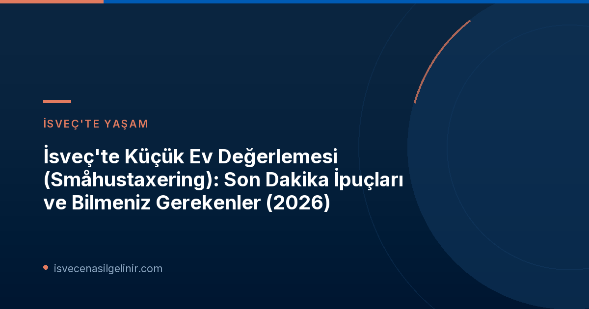

İsveç'te bir ev sahibiyseniz, özellikle de bir villa, ikiz ev, sıra ev, müstakil ev veya boş bir arsa sahibiyseniz, Skatteverket'in "Småhustaxering" (Küçük Ev Değerlemesi) süreciyle ilgili duyurusuna dikkat etmelisiniz. Bu, her üç yılda bir yapılan ve mülkünüzün değerleme değerini belirleyen önemli bir süreçtir. Bu yılki değerleme için son tarihler yaklaşıyor ve Skatteverket, ev sahiplerine "son dakika ipuçları" sunuyor.
Småhustaxering Nedir ve Neden Önemlidir?
Småhustaxering, İsveç'te küçük evler ve arsalar için uygulanan periyodik bir değerleme sürecidir. Skatteverket, bu değerleme sonucunda mülkünüz için bir "taxeringsvärde" (değerleme değeri) belirler. Bu değer, sadece ödeyeceğiniz emlak vergisi ve emlak ücretini değil, aynı zamanda sigorta primlerinizi ve hatta konut kredinizin koşullarını bile etkileyebilir.
Kimler Yeni Değerlemeyi Kontrol Etmeli?
İsveç'te aşağıdaki mülk türlerinden herhangi birine sahipseniz, değerleme önerinizi kontrol etmeniz gerekmektedir:
- Villa (müstakil ev)
- Parhus (ikiz ev)
- Kedjehus (zincir ev)
- Radhus (sıra ev)
- Obebyggd tomtmark (boş arsa)
Mülkünüzü kalıcı konut olarak mı yoksa yazlık olarak mı kullandığınız fark etmeksizin, bu kontrolü yapmanız zorunludur.
Önemli Tarihler ve Bilgiler
| Konu | Detay |
|---|---|
| Değerleme Değeri Kontrol Son Tarihi | 2 Kasım 2026 |
| Emlak Beyannamesi Teslim Son Tarihi | 2 Kasım 2026 |
| Değerleme Esası | 2023-2025 yılları arası satış fiyatları |
| Beklenen Ortalama Değişim | Ülke genelinde ortalama %3 düşüş |
| Yeni Değerleme Kararlarının Gönderilme Tarihi | Haziran 2027 |
Değerleme Önerinizi Nasıl Kontrol Edeceksiniz?
Çoğu küçük ev sahibi, yeni değerleme değerine ilişkin bir öneri almıştır. Bu öneriye, Skatteverket'in e-hizmetinden, yani "fastighetsdeklaration" (emlak beyannamesi) e-hizmetinden ulaşabilirsiniz. Eğer mülkünüzde herhangi bir değişiklik (yeniden yapılanma, yeni inşaat veya standart iyileştirmeler) yapmadıysanız, sadece Skatteverket'in sağladığı bilgilerin doğru olup olmadığını kontrol etmeniz yeterlidir.
Hangi Durumlarda Değişiklik Yapmalısınız?
Skatteverket'in faaliyet geliştiricisi Jerker Wesslén'in belirttiği gibi, öneriyi dikkatlice incelemek büyük önem taşır. Eğer evinizde yeniden yapılanma, yeni inşaat veya standart iyileştirmeler gibi değişiklikler yaptıysanız, beyannamede bu bilgileri güncellemeniz gerekmektedir. Bilgiler doğruysa ve herhangi bir değişiklik yapmadıysanız, ek bir işlem yapmanıza gerek yoktur. Eğer birden fazla kişi aynı evin sahibi ise, değişikliklerin sadece bir sahip tarafından yapılması yeterlidir.
E-hizmet üzerinden işlem yapmak, hata riskini azaltır ve bilgileri kolayca değiştirmenize veya tamamlamanıza olanak tanır. Ayrıca, e-hizmet üzerinden bir görevliyle doğrudan sohbet edebilir ve sorularınıza yanıt alabilirsiniz. İsveç'teki yaşam ve vatandaşlık süreçleri hakkında daha fazla bilgi için İsveç Vatandaşlık Testi sayfamızı ziyaret edebilirsiniz.
Değerleme Değerlerinin Hesaplanması ve Beklenen Değişiklikler
Skatteverket, küçük ev değerlemelerini her üç yılda bir gerçekleştirir. Bu seferki değerleme için 2023-2025 yılları arasındaki satış fiyatları temel alınmıştır. Ülke genelinde değerleme değerlerinde ortalama %3'lük bir düşüş beklenmektedir. Yeni emlak değerlendirme kararları, Haziran 2027'de hem dijital hem de basılı formda Skatteverket tarafından gönderilecektir.
Sonuç ve Hatırlatmalar
2 Kasım 2026 tarihine kadar emlak değerleme önerinizi kontrol etmek ve gerekirse değişiklikleri yapmak büyük önem taşımaktadır. Bu süreci ihmal etmemeniz, gelecekte karşılaşabileceğiniz olası finansal sıkıntıların önüne geçmenizi sağlayacaktır. Skatteverket'in sunduğu e-hizmetlerden faydalanarak bu işlemi kolayca ve güvenli bir şekilde tamamlayabilirsiniz.
Referanslar:
İsveç'te Emlak ve Yaşam Hakkında Daha Fazla Bilgi Edinin!
İsveç'teki vergi süreçleri, göçmenlik adımları ve vatandaşlık sınavı hakkında kapsamlı rehberlerimize göz atın. Bilinçli adımlar atarak İsveç'teki yaşamınızı kolaylaştırın.